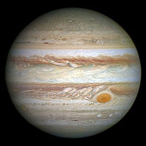

Jupiter is the largest planet in the solar system. It is approximately 143,000 kilometers (about 89,000 miles) wide at its equator. Jupiter is so large that all of the other planets in the solar system could fit inside it. More than 1,300 Earths would fit inside Jupiter.
Jupiter is like a star in composition. If Jupiter had been about 80 times more massive, it would have become a star rather than a planet.